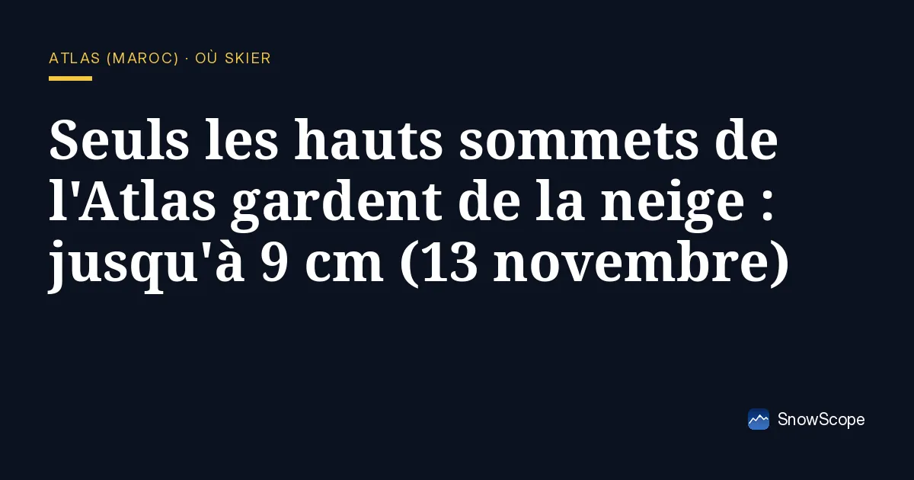

Seuls les hauts sommets de l'Atlas gardent de la neige : jusqu'à 9 cm (13 novembre)
Vendredi 13 novembre, la neige de l'Atlas est confinée aux terrains les plus élevés. Aucune des trois stations—Habri, Michlifen ou Oukaïmeden—n'a de neige sur ses pentes. La neige la plus profonde gît seulement sur les plus hauts sommets : environ 40 km² de terrain enneigé, avec jusqu'à 9 cm de profondeur par endroits.
Consultez les prévisions neige en temps réel pour Habri sur l'application SnowScopeHauteurs de neige, alertes poudreuse et carte 3D, gratuitement.
Où est la neige en ce moment
Habri n'a pas de neige sur ses pentes supérieures. Michlifen n'a pas de neige de sa base à 1 870 m à son sommet à 2 070 m. Oukaïmeden, la plus haute des trois à 3 258 m, ne montre pas non plus de neige sur ses pentes aujourd'hui.
La neige qui reste dans l'Atlas est dispersée seulement sur les très hautes crêtes et arêtes—des terrains bien au-dessus où ces stations montent. À 2 929 m, la mi-hauteur d'Oukaïmeden, il n'y a toujours rien. La neige gît seulement sur les sommets bien au-dessus de 3 000 m.
| Station | Hauteur de neige | Neige fraîche, 72 h | Attendu, jours suivants | Sommet |
|---|---|---|---|---|
| Habri | 0 cm | 0 cm | 0 cm | 2 108 m |
| Michlifen | 0 cm | 0 cm | 0 cm | 2 070 m |
| Oukaïmeden | 0 cm | 0 cm | 0 cm | 3 258 m |

La neige fond rapidement
Il y a trois jours, le 11 novembre, 50 km² de l'Atlas était enneigé. Vendredi, c'était tombé à 40 km². La prévision du 16 novembre montre juste 30 km²—une perte régulière à mesure que la chaleur de novembre dévore la neige maigre du début de saison.
C'est typique pour l'Atlas en mi-novembre. Les montagnes arides d'Afrique du Nord retiennent mal la neige à cette époque de l'année. L'enneigement arrive et part avec chaque tempête ; entre les tempêtes, le soleil et le vent agissent rapidement.
Qu'est-ce qui est normal en novembre ?
L'historique montre que ce n'est pas inhabituel. En remontant les 46 derniers hivers, la profondeur moyenne de neige à cette date à 1 970 m près de Michlifen était 0 cm. À la mi-hauteur d'Oukaïmeden de 2 929 m, la profondeur habituelle en novembre était aussi 0 cm. Un début d'hiver nu est la norme pour l'Atlas.
Les 9 cm d'aujourd'hui sur les plus hauts sommets sont en fait plus maigres que ce qui a été observé dans 43 des 46 derniers ans à la même altitude. La neige du début de saison ici se tient sur le fil du rasoir.
Ce qui vient ensuite
Aucune neige nouvelle n'est prévue à aucune des trois stations jusqu'au 16 novembre ou plus tard. Quand la prochaine tempête arrive, Oukaïmeden aura la meilleure chance d'attraper et de conserver la neige en raison de sa hauteur. Son sommet à 3 258 m s'élève bien au-dessus de Habri (2 108 m) et Michlifen (2 070 m), donc elle reste plus longtemps dans l'air froid.
Habri et Michlifen auront besoin d'une tempête plus froide—une qui pousse le niveau de congélation assez bas—pour transformer les nouvelles pluies en neige durable. Pour l'instant, la prévision montre un déclin continu jusqu'au 16 novembre : l'Atlas s'oriente vers une période sèche, et le petit manteau neigeux continuera à se retirer.
Ce que cela signifie pour les montagnes
La neige du début de saison dans l'Atlas est l'eau stockée dans les montagnes. Cette couche maigre de 9 cm sur les hautes crêtes alimentera finalement les rivières et réservoirs des plaines en dessous quand le printemps viendra. Mais en novembre, avant que la neige profonde de l'hiver n'arrive, l'Atlas retient très peu de cette eau précieuse.
La neige que vous voyez sur SnowScope est un instantané pris le jour de donnée 13 novembre. Les prévisions changent rapidement dans cette partie du monde. Les montagnes arides et le couvert maigre signifient que les conditions peuvent changer en heures.
Conseils aux skieurs
- Ne supposez pas qu'une station est ouverte ou a de la neige skiable juste parce que SnowScope montre de la neige à proximité. Consultez le site propre de la station pour connaître l'état des remontées et les dates d'ouverture.
- Toute neige sur les pentes de l'Atlas en ce moment est à la fois maigre et clairsemée. Si vous êtes à la montagne, restez sur les pistes balisées : l'herbe et les rochers se cachent juste sous quelques centimètres de couverture.
- Le prochain événement neigeux significatif peut être dans des jours. Regardez la carte SnowScope à nouveau la veille de votre déplacement pour voir si les conditions ont changé.
- Oukaïmeden est la plus haute des trois stations et gardera la neige le plus longtemps. Planifiez une visite là si vous voulez la meilleure chance du début de saison.
- Réglez une alerte neige dans l'appli SnowScope pour savoir quand la neige fraîche arrive à Habri ou Michlifen—les signaux vous diront quand c'est le moment de revenir.
À propos de ces chiffres
Les hauteurs de neige des stations sont la neige la plus épaisse sur le haut du domaine à la date indiquée ; ce sont des estimations pour une zone, pas une mesure en un point. Les prévisions peuvent changer. Consultez toujours le bulletin d'avalanche officiel avant le hors-piste.
Citer ce bulletin
Pour la recherche, l'enseignement ou la presse : chiffres et graphiques réutilisables librement sous CC BY 4.0 avec cette citation.
SnowScope (2026), Seuls les hauts sommets de l'Atlas gardent de la neige : jusqu'à 9 cm (13 novembre), https://snowscope.app/blog/fr/2026/11/atlas-morocco-atlas-snow-check-13-november-2026.html, consulté le 2026-11-13
SnowScope (Atlas Labs). (2026, November 13). Seuls les hauts sommets de l'Atlas gardent de la neige : jusqu'à 9 cm (13 novembre). SnowScope snow reports. https://snowscope.app/blog/fr/2026/11/atlas-morocco-atlas-snow-check-13-november-2026.html
BibTeX
@misc{snowscope2026atlasmoroccoatlassnowche,
author = {{SnowScope (Atlas Labs)}},
title = {Seuls les hauts sommets de l'Atlas gardent de la neige : jusqu'à 9 cm (13 novembre)},
year = {2026},
month = nov,
howpublished = {\url{https://snowscope.app/blog/fr/2026/11/atlas-morocco-atlas-snow-check-13-november-2026.html}},
note = {Published 2026-11-13 13:02 UTC; accessed 2026-11-13}
}· CC BY 4.0 · Méthodes, données et outils →
Habri : neige et température selon l'altitude, cet hiver vs l'hiver dernier (outils) →
Suivre Habri
Gratuit : un message quand la neige arrive, et la météo chaque matin.
Autres bulletins neige

Un carnet pratique sur Oukaïmeden, dans le Haut Atlas : quand la neige arrive, en quelle quantité, quelles pentes viser et comment y aller depuis Marrakech.

Michlifen, près d'Ifrane, a de la neige par courts épisodes plutôt qu'une saison. Ce que montrent 46 hivers passés, pourquoi la hauteur habituelle est nulle, et comment être là les bons jours.

Pas encore de neige à Oukaïmeden le 12 novembre. Les pics de l'Atlas sont dénudés ; la saison hivernale atteint généralement son apogée en mars avec 58 cm au sommet.